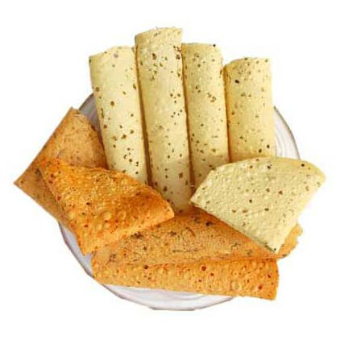

üçò Rajasthani Papad Recipe

Ingredients
- 1 cup urad dal flour (or moong dal flour)
- 1/2 tsp black pepper (coarsely crushed)
- 1/2 tsp cumin seeds
- 1/4 tsp asafoetida (hing)
- Salt to taste
- Water as needed
- Oil for greasing
Instructions
- In a bowl, mix urad dal flour, crushed pepper, cumin, hing, and salt.
- Gradually add water and knead into a stiff dough.
- Divide into small balls and roll them thin on a greased surface.
- Sun dry on a clean cloth or tray for 1–2 days until crisp and dry.
- Once dried, store in airtight containers.
- Roast or fry papads before serving.
Serve With
- Rajasthani thali
- Dal Baati Churma
- Curry or khichdi
- As a crunchy snack
üìå Tip: You can also microwave or toast papads for a healthier version.